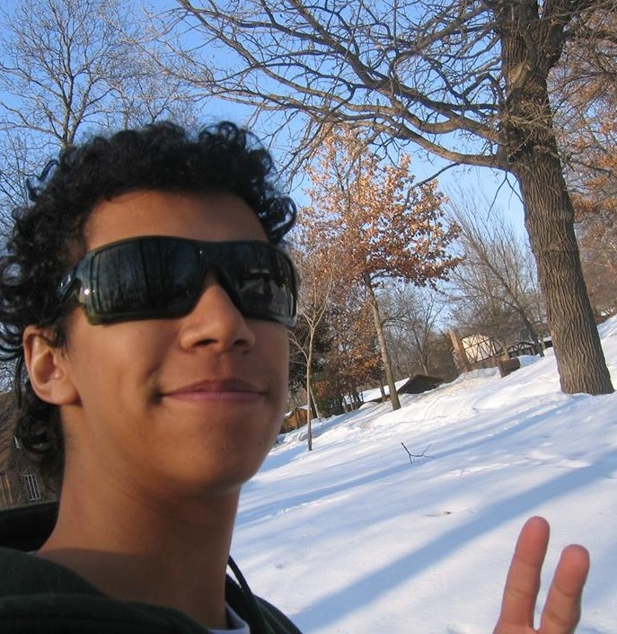
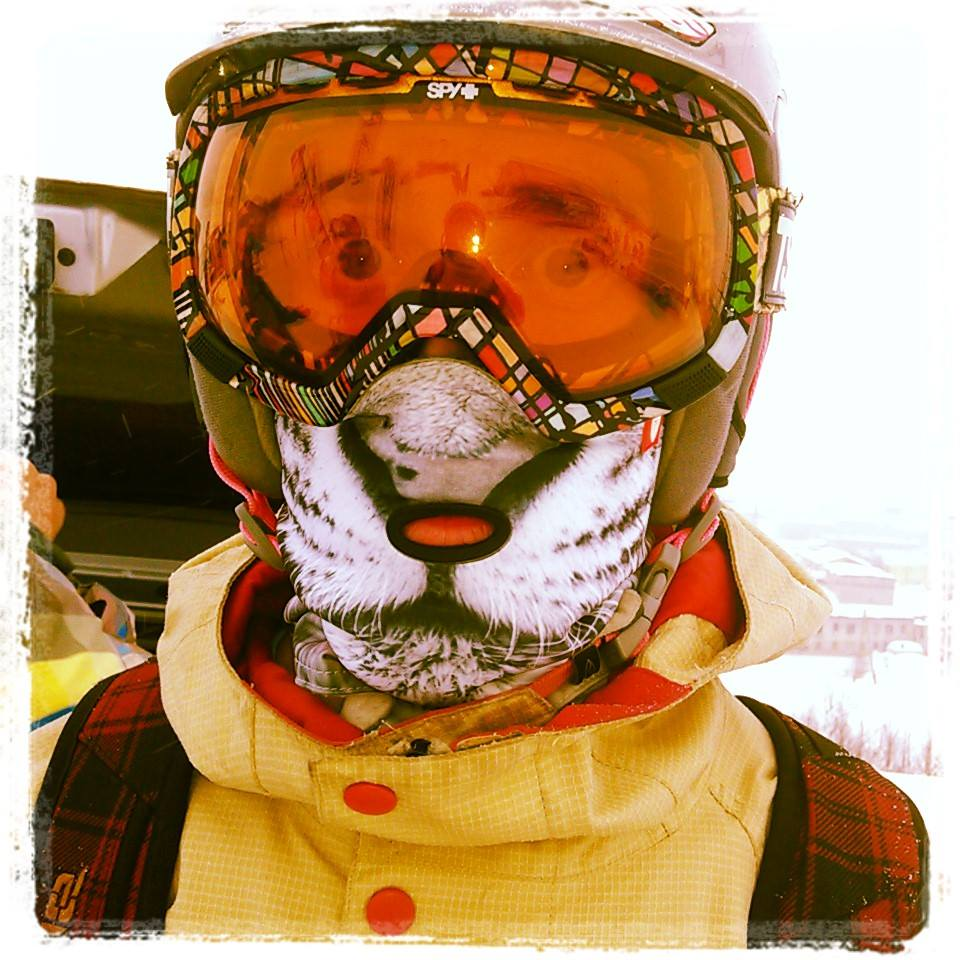
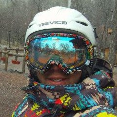
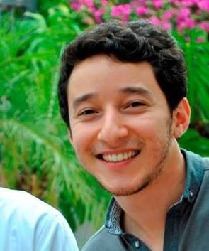
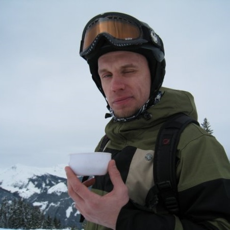
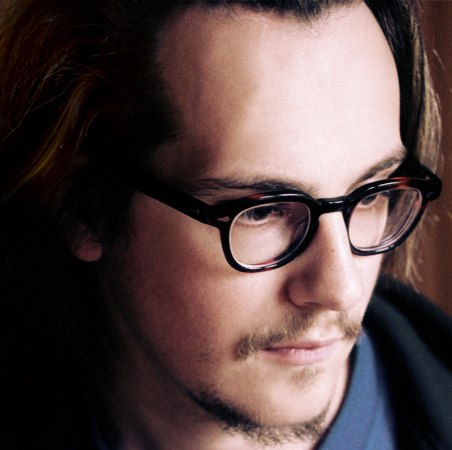

Galera ZR
A ideia deste site nasceu nas pistas de chile onde se econtraram um brasileiro, que foi virar snowbordista e um russo, que virou um brasileiro. A eles juntaram os profissionais tanto na parte tecnica de criacao de sites, etc, quanto os rider e snowbordista, juntos nos realizamos este projeto.
Por favor, nao considere este site como algo fixo, parado. Nos estamos se mudando todo dia, e acima de tudo apreciamos suas sugestoes, comentarios e propostas de colaboracao, qs vc pode enviar para info@zonaradical.com.br
Nossos Riders
Mal lancamos o site, mas ja chamamos todos os riders e amantes de snowboparding juntar o time dos profissionais da Zona Radical. Nos ofereceremos todo apoio possivel, que infelizmente eh pouco por enquanto - somos muuuuito novos ainda! Mas torcemos q vai crescendo.
Nao fica indeciso, nos escreve! info@zonaradical.com.br
No entanto, temos o prazer de apresentar nosso primeiro pro-rider Rafael Ramos!
-

Rafael Ramos
de 23 anos o Rafa e louco por todos os esportes de prancha: skate street, freebord, snowboard, carveboard. Terceiro lugar em 2013 no ranking brasileiro de snowboard slopestyle. Atualmente é o quarto brasileiro melhor posicionado no ranking da World Snowboard Tour (WST) e junto com a Zona Radical luta a favor do crescimento do esporte,no nosso querido país.
Zona Radical ta na área!
Nossa equipe
Nossa equipe contem cinco pessoas de todos os cantos de nossa planeta. Igual ao proprio esporte de snowboarding e ao prazer de contato com a natureza quais nao tem fronteiras, nossa equipe tbm reune as pessaos de lugares diferentes.
-

Ignat Fialkovskiy
Com doutorado em fisica, Ignat propaga a sua creatividade em muitas areas alem da pesquisa cientifica, q incluem mas nao se limitem a divulgacao e relacoes publicas, vida noturna e snowboarding. Neste ultimo, que comecou praticar so poucos anos atras, ja provou q a unica coisa q pode faltar eh a vontade, e se evoluir neste esporte de neve vc pode ate no pais tropical do Brasil.
Fundador de “projeto cultural olovo” https://vk.com/olovoproject, co-fundador de balada “Estacao Central SPb” http://www.centralstation.ru/, CEM@joomalungma https://www.facebook.com/joomalungma.
-

Rodirgo Lourenco
Formado em Engenharia porem louco por neve e a 5 anos praticante de snowboard. Responsavel pelo conteudo técnico, dicas e informações sobre estações de esquis, em uma dessas viagem conheceu um russo com a mesma paixão e juntos resolveram unir todas as informações, experiencias para ajudar a todas as pessoas a entender o esporte e criar possibilidades para que todos pratiquem.
-

Caio Kato
Jounralismo
-

Nikita Zonov
Programacao - e o que eu amo e faco para a Zona Radical. Ruby on the Rails, que a gente implementou aki, e a feramenta mais moderna para desenvolvimento de um web-site. Aproveita! Joomalungma forever =)
-

Alexander Romanov
Trabalhando na area de desgin desde 2012 sou responsavel pelo visual do nosso site. O alvo era fazer algo leve, atraente e moderno. Espero que saiu bem 😊 Meu portfolio e http://stasonweb.com/en/